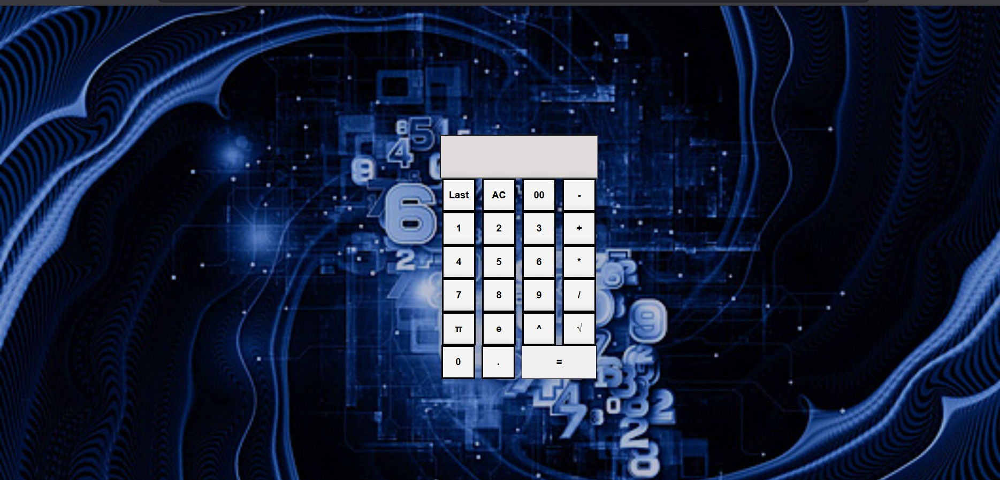
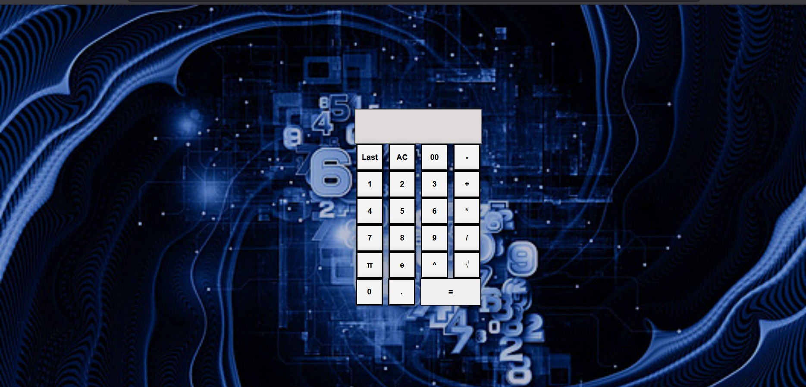
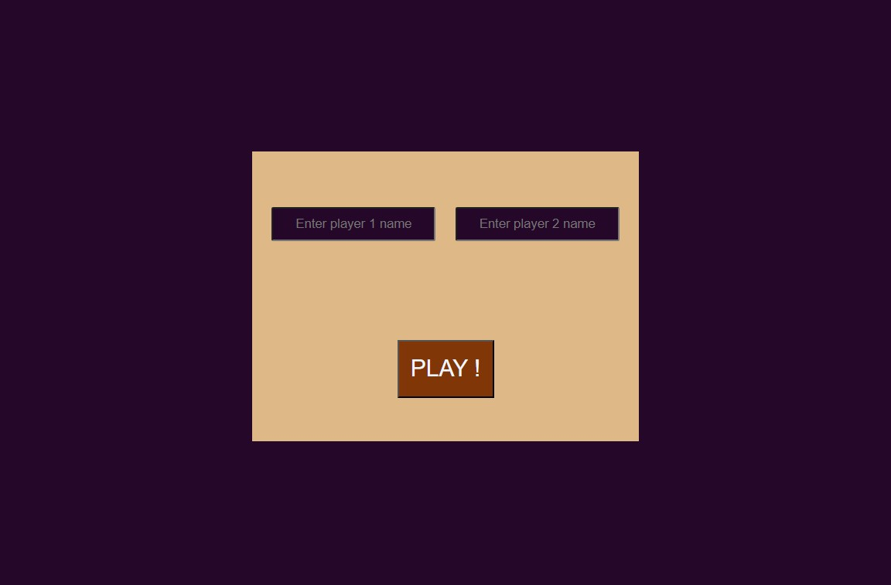
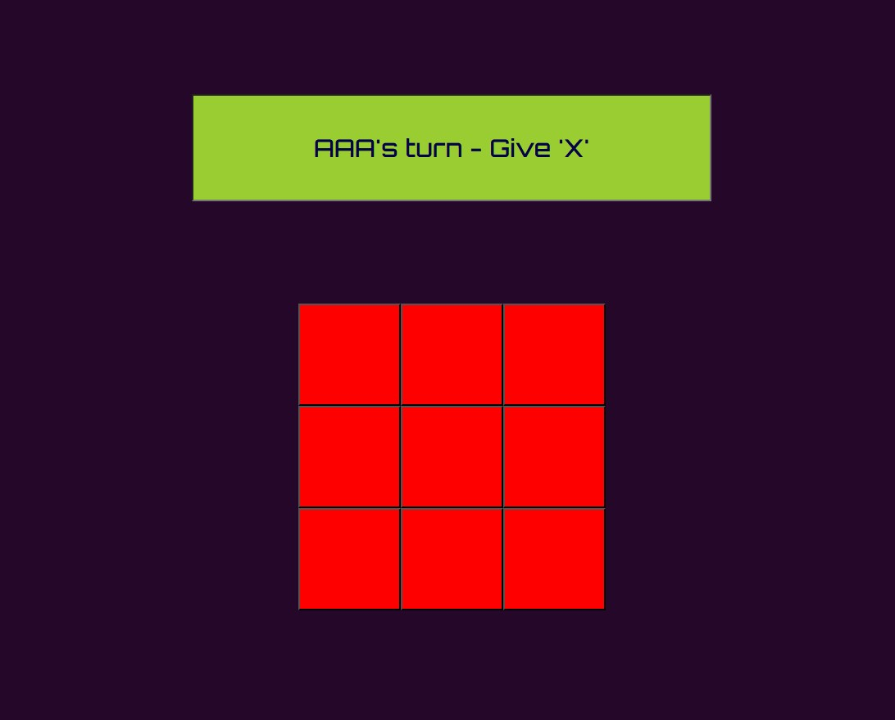
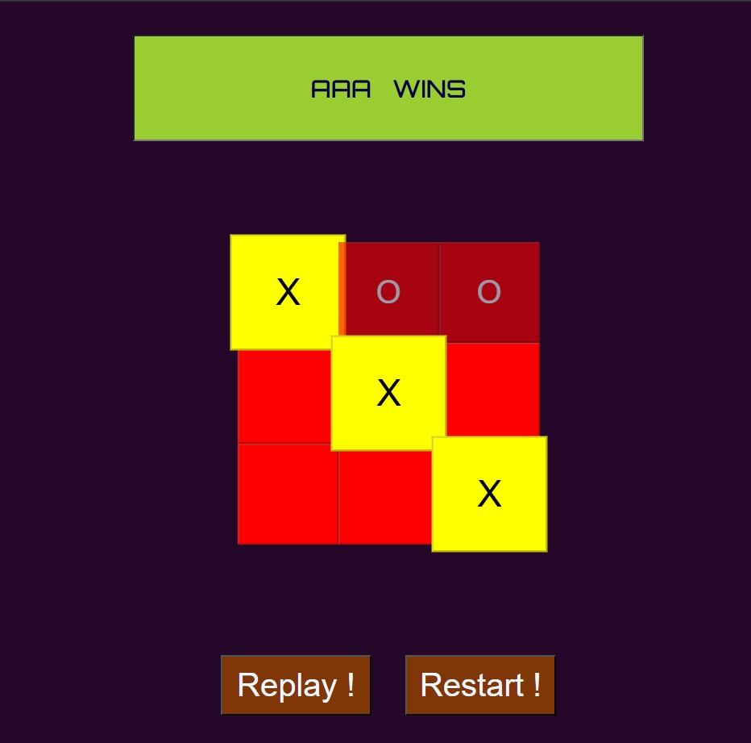
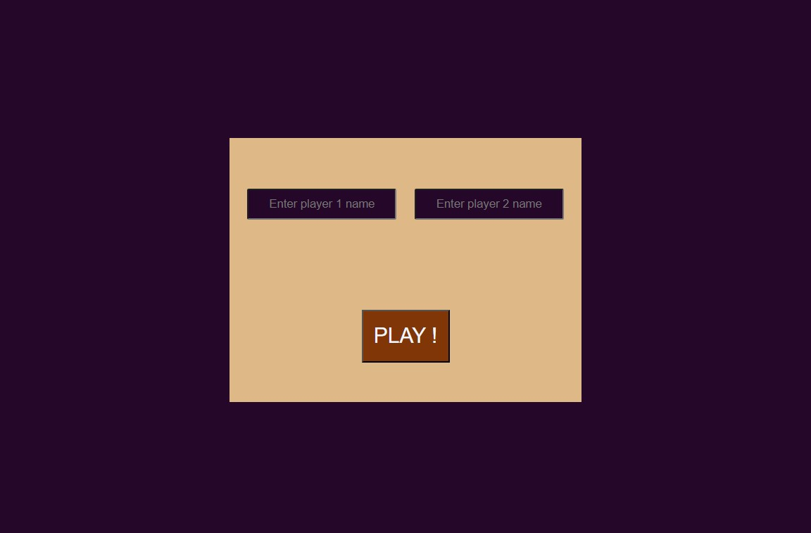
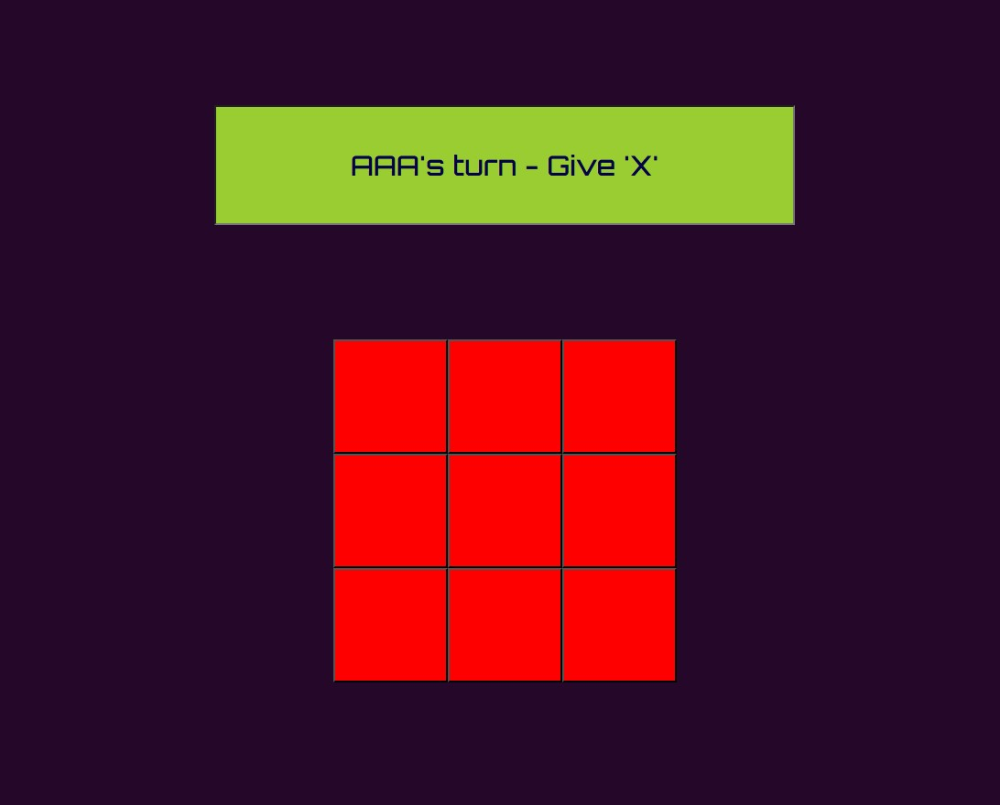
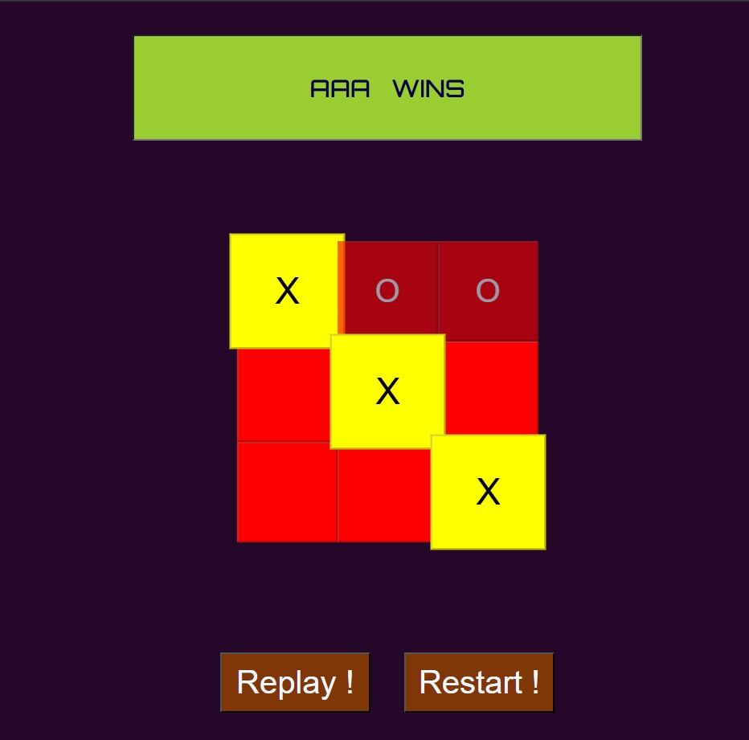

My Projects
Mentor - Ayush Ranjan ↗
•Basic Calculator
This is a basic calculator working in webpages. This can do basic calculations of operations
between two numbers at a time. This can do addition, subtraction, multiplication, division, square root operations,
exponentiation etc with the history of last evaluated expression.So, please have a look !!
Live-project link :
Link Here 
•Tic-Tac-Toe Web-Game
Live-project link :
Link Here 
This is a webpage based Tic-Tac-Toe game .This game is a two-player game having naming input and proper win-draw checking facility
.In the further improvements single player mode(AI Mode) and better win-draw graphics will also be added. This game also contains replay
& restart facility.So, please have a look !!
Live-project link :
Link Here   
•Portfolio Website
Live-project link :
Link Here   
This is a portfolio cum intro webpage of our WebnD society of IIT Bhubaneswar showcasing our description, council members and
contributions to our college. There is also a section of my personal small projects, made through the continuous enthusiasm and
guidance of our society secretary and my mentor.So, please have a look !!
Live-project link :
Link Here
Live-project link :
Link Here